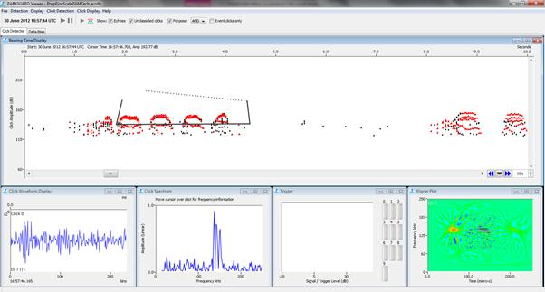
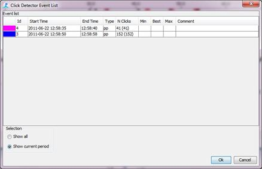
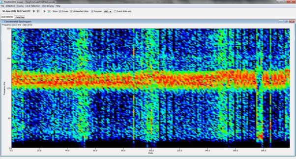

Figure 9. Open the binary files you saved.
Open PAMGUARD binary files in viewer mode, browse through clicks and create a better porpoise click classifier. Re-classify porpoise clicks with the better classifier in viewer mode, mark out interesting click features and view using concatenated spectrogram.
You have so far used PAMGUARD to run through ten channels of raw .wav data and pick out porpoise clicks. All clicks, including classified porpoise clicks, have been saved in PAMGUARD binary files. These are around 99.9% smaller than .wav files and contain all information needed to browse through click data and perform complex tasks, such as classification or localisation. In this exercise we will open binary files in PAMGUARD viewer mode.
Start PAMGUARD viewer mode. PAMGUARD will ask you to select a database. Select the database you used in analysing the .wav files. Next PAMGUARD will ask you to select binary files.
Figure 9. Open the binary files you saved.
Select the folder you saved binary files when using PAMGUARD in standard mode. PAMGUARD should now open. You will be presented with a click detector window which looks very similar to PAMGUARD in standard mode.
![Extra scroll bar controls are present in many primary displays in PAMGUARD viewer mode. Only a certain time period of click detections will be loaded into the computer's memory at any one time. Only these detections are visible in the click detector display. To move to time period before or after the current data loaded data press the blue buttons. The middle button can be pressed to bring up a dialog box. Here you can define the period of data (Duration) to be loaded into memory. The Step Size defines the 'jump' to take to the next section of data. For example 75% means, when a new section of data is loaded, 25% of the previous section is left. The Start Time allows you to manually select where to load the data from.](images/image015alt.png)
There are, however, several important differences between the click detector in PAMGAURD viewer and standard mode. The scroll bars allow users to navigate through and load new sections of data. You will also find new displays are present and extra functionality exists to annotate clicks and add to events. Play around with the controls and load a new section of clicks.
You will notice after selecting some click detections, that the classifier we used in section 1 has missed a lot of porpoise clicks. For the purposes of localisation it is often better to have more false positives than false negatives. Therefore we need to reclassify clicks. Go to Click Detection > Re Analyse Click Types... This will bring up the click analysis dialog box.

Figure 10. Reprocessing clicks allows you to tweak classifier settings.
Tick the Reclassify Clicks check box and click on Settings... This will bring up the familiar click classifier manager from which you can access your classifier settings.


In the click classifier disable the Click Length and Zero Crossing settings. Click OK on the classifier and Classifier manager to return the Click Analysis dialog. In the Data Options drop down menu select All Data. This will perform data processing on all binary files rather than just the click detections currently loaded into memory. Click Start and wait for the processing to finish.
You should notice that the number of classified clicks visibly increases. Play around with the classifier until you are happy with the settings and the majority of the porpoise clicks are correctly classified.

The PAMGUARD Viewer click detector allows manual marking of events. Events usually consist of a group of clicks associated with one acoustic encounter of a particular species. Event information is saved to the database and in certain situations can be used to perform extra analysis
Double click on the amplitude time display. By repeatedly clicking with the mouse you can draw a bounding line around a group of clicks. By joining up the ends of the dotted line an area is selected and will be coloured grey.

Figure 11. You can select groups of clicks to add to an event by drawing a shape around them and right clicking.
These clicks can now be saved as an event. Right click within the grey area and select New Event. Use Porpoise from the drop down menu and click OK. If there are no species in the dropdown menu you can right click and select Edit Species to add some. Your clicks should now turn a different colour which indicates this event is saved. By selecting Click Detection > Show Eventsyou can bring up a dialog box showing selected events.

Figure 12. Events can be accessed from the Event List.
Create a few events of interesting sections of clicks.
There are a few extra displays in viewer mode which allow users to investigate more acoustic properties of clicks, especially once events have been selected.
Go to Click Display > Add Display... > Concatenated Spectrogram. This will add the Concatenated Spectrogram display. Click on a click within an event to bring up the concatenated spectrogram for that event. You should see a narrow band of energy near 130kHz, typical for porpoise vocalisations.

Figure 13. Concatenated Spectrogram of a set of porpoise clicks. As expected lots of energy in the 120-140kHz band.